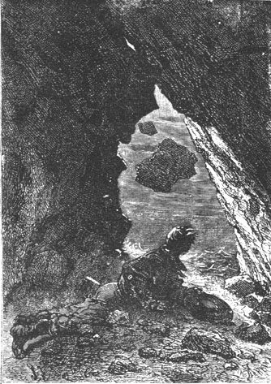
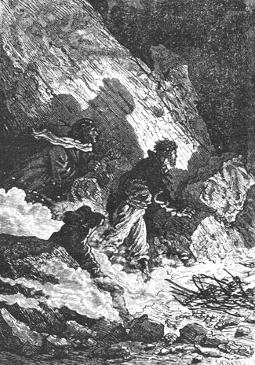
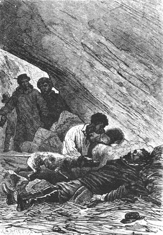

Gideon Spilett, motionless, his arms crossed, was on the beach looking at the sea whose horizon was obscured in the east by a large black cloud that was rapidly moving towards the zenith. The wind was already strong and becoming fresher with the decline of day. The sky looked bad and the first symptoms of a storm were apparent.
Herbert entered the Chimneys and Pencroff went to the reporter. The latter, very absorbed, did not see him come.
“We are going to have a bad night, Mister Spilett!” said the sailor. “Rain and wind are the joy of petrels.” 1
The reporter, then turning, saw Pencroff and his first words were these:
“At what distance from the coast would you say the basket was when it was struck by the wave which carried off our companion?”
The sailor had not expected this question. He reflected for a moment and replied:
“At two cables length at most.”
“But what is a cable length?” asked Gideon Spilett.
“About one hundred twenty fathoms or six hundred feet.”
“Then,” said the reporter, “Cyrus Smith disappeared twelve hundred feet at most from the shore?”
“About,” replied Pencroff.
“And his dog also?”
“Also.”
“What astonishes me,” added the reporter, “while admitting that our companion has perished, is that Top has likewise met his end and that neither the body of the dog nor that of his master has been thrown on shore.”
“It is not astonishing with such a strong sea,” replied the sailor. “Besides, it is possible that the current has carried them further along the coast.”
“Thus it is your opinion that our companion has perished among the waves?” the reporter asked again.
“That is my opinion.”
“My opinion,” said Gideon Spilett, “much as I respect your experience, Pencroff, is that the double fact of the absolute disappearance of Cyrus and Top, living or dead, is an inexplicable thing and improbable.”
“I wish I could think like you, Mister Spilett,” replied Pencroff, “unfortunately my mind is made up.”
That said, the sailor returned to the Chimneys. A good fire crackled on the hearth. Herbert threw an armful of dry wood on it and the flame shed light into the gloomy parts of the passageway. Pencroff occupied himself at once with preparing dinner. It seemed best to introduce into the menu some “pièce de résistance” because everyone needed to renew his strength. The strings of couroucous were saved for the next day but they plucked two grouse and soon the gallinules were roasting on a spit in front of a flaming fire.
At seven o’clock in the evening Neb had not yet returned. This prolonged absence could only make Pencroff uneasy about the negro. They were forced to believe that he had met with some accident on this unknown land or that the unfortunate had performed some act of despair. But Herbert drew totally different conclusions from this absence. According to him, if Neb had not yet returned, it was due to some new circumstance which caused him to prolong his search. Now anything new could only be to Cyrus Smith’s advantage. Why had Neb not returned unless some hope retained him? Perhaps he had found some indication, a footprint, the remains of a wreck which put him on the track? Perhaps at this very moment he was following a certain clue? Perhaps he was even near his master?...
Thus reasoned the lad. Thus he spoke. His companions let him speak. The reporter alone approved with a gesture. But for Pencroff it was probable that Neb had gone further than the previous day in his search along the coast and that he could not yet return.
However, Herbert was agitated by vague premonitions and several times he wanted to go to meet Neb. But Pencroff made him understand that it would be a useless course, that in this obscurity and because of the deplorable weather, he could not find traces of Neb, and that it was worth waiting. If by the next day Neb had not reappeared, Pencroff would not hesitate to join Herbert in going to search for Neb.
On this point Gideon Spilett agreed with he sailor that they must not separate and Herbert had to give up his project; but two large tears fell from his eyes.
The reporter could not refrain from embracing the generous lad.
The bad weather had absolutely broken out. A violent southeast windstorm without equal passed over the coast. They heard the sea, then at low tide, roar against the leading rocks on the beach. The rain, pulverized by the storm, rose up like a wet mist. Wisps of fog dragged along the shore where pebbles rattled violently like cartloads emptying themselves. The sand, lifted by the wind, mashed into showers and made the assault indefensible. There was just as much mineral dust in the air as water vapor. Large eddies swirled between the mouth of the river and the face of the wall and the stratum of air that escaped from this maelstrom could find no exit other than the narrow valley whose watercourse was engulfed with a irresistible violence. The smoke from the hearth, restricted by the narrow passageway, backed up frequently, filling the corridors and rendering them uninhabitable.
That is why, as soon as the grouse were roasted, Pencroff let the fire die down, conserving nothing but the embers buried under the cinders.
At eight o’clock Neb has still not reappeared; but they could now assume that it was the awful weather alone that prevented his return and that he had found refuge in some hollow to wait out the end of the storm or at least the return of day. As to going to meet him, to attempt to find him under these conditions, this was impossible.
The game formed the only dish of supper. They gladly ate this meat which was excellent. Pencroff and Herbert, whose appetites were excited by their long excursion, were ravenous.
Then each retired to the corner where he had rested the previous night, and Herbert was not long in falling asleep near the sailor who stretched out along the length of the hearth.
Outside, as the night advanced, the tempest took on formidable proportions. It was a windstorm comparable to the one that carried the prisoners from Richmond to this land in the Pacific. Tempests are frequent during the equinoctial season. They are fruitful in producing terrible catastrophes throughout this large area where there are no obstacles to oppose their fury. One can then understand that a coast so exposed to the east, that is to say in direct line with the storm and struck headlong, was battered by a force that cannot be described.
Very fortunately, the pile of rocks which formed the Chimneys was sturdy. It was composed of enormous sections of granite of which a few, nevertheless, not being in sufficient balance, seemed to tremble on their base. Pencroff sensed this and pressing his hand against the walls felt the rapid quiverings. But finally he said to himself over and over, and with reason, that there was nothing to fear and that his improvised retreat would not cave in. Nevertheless he heard the clatter of the rocks which, detached from the summit of the plateau and uprooted by the swirling wind, fell on the beach. A few even rolled as far as the upper part of the Chimneys or broke into splinters when they fell straight down. Twice the sailor got up and crawled to the opening of the passageway to look outside. But these falls which were not considerable did not constitute any danger and he returned to his place in front of the fire whose embers were sputtering under the cinders.

Pencorff crawled to the opening of the passageway.
Despite the furies of the hurricane, the roar of the tempest, the thunder of the storm, Herbert was in a deep sleep. Sleep finally took possession even of Pencroff since a seaman’s life had accustomed him to all these violences. Gideon Spilett alone was wide awake because of the commotion. He reproached himself for not having accompanied Neb. One could see that all hope had not abandoned him. The misgivings that had agitated Herbert did not cease to agitate him also. His thoughts were concentrated on Neb. Why had Neb not returned? He tossed on his bed of sand hardly giving a thought to the battle of the elements. At times his eyes, heavy with fatigue, closed for an instant but some cursory thought reopened them almost at once.
However the night advanced and it may have been two o’clock in the morning when Pencroff, then in a deep sleep, was shaken vigorously.
“What is it?” he cried, awakening and recollecting his thoughts with a promptitude typical of seamen.
The reporter was leaning over him and said to him:
“Listen Pencroff, listen!”
The sailor cocked his ear but could not distinguish any sound foreign to that of the squall.
“It is the wind,” he said.
“No,” replied Gideon Spilett, listening again. “I thought that I heard...”
“What?”
“A dog barking!”
“A dog!” cried Pencroff, getting up in a single bound.
“Yes... barking...”
“That isn’t possible!” replied the sailor. “And besides, how with the roar of the storm...”
“Wait... Listen...” said the reporter.
Pencroff listened more attentively and in fact he thought that he heard a distant barking in a quiet moment.
“Well!...” said the reporter, pressing the sailor’s hand.
“Yes... Yes!...” replied Pencroff.
“It’s Top!... It’s Top!...” shouted Herbert, just awakening, and all three dashed toward the entrance to the Chimneys.
They left with extreme difficulty. The wind drove them back. But finally they succeeded although they could not stand erect without resting against the rocks. They saw but they could not speak.
The obscurity was absolute. The sea, the sky, the ground were merged in equal darkness. It seemed that there was not an atom of light in the sky.
For several minutes the reporter and his two companions remained so, crushed by the storm, drenched by the rain, blinded by the sand. Then they heard the barking once again during a respite in the storm, which came from rather far away.
It could only be Top barking this way! But was he alone or accompanied? Most likely he was alone because if they assumed that Neb was with him, Neb would have gone with all speed toward the Chimneys.
Since he could not make himself heard the sailor pressed the hand of the reporter as if to say: “Wait!” Then he reentered the corridor.
An instant later he came out again with a lighted faggot which lit up the gloom. He whistled sharply.
It seemed as if this signal was expected. In response the barking came much nearer and soon a dog dashed into the corridor. Pencroff, Herbert and Gideon Spilett followed him there.

...this signal was expected.
An armful of dry wood was thrown on the embers. A vivid flame lit up the corridor.
“It’s Top!” shouted Herbert.
In fact it was Top, a magnificent anglo-norman crossbreed who inherited from both species speed and odor sensitivity, the two qualities par excellence of the hunting dog.
It was the dog of the engineer Cyrus Smith.
But he was alone! Neither his master nor Neb accompanied him!
Moreover how had his instinct been able to lead him to the Chimneys which he did not know? This appeared inexplicable especially on such a dark night, and in such a storm! An even more inexplicable detail was that Top was neither fatigued nor exhausted, not even soiled with mud or sand!...
Herbert went toward him and pressed his head between his hands. The dog rubbed his neck on the lad’s hands.
“If the dog has been found the master will also be found!” said the reporter.
“God will it!” replied Herbert. “Let us leave! Top will guide us!”
Pencroff made no objection. He felt that Top’s arrival contradicted his conjectures.
“Let’s go,” he said.
Pencroff carefully covered the embers of the fire. He placed several pieces of wood under the cinders so that the fire could be rekindled on their return. Then, preceded by the dog who seemed to invite them with short barks, and followed by the reporter and the lad, he dashed outside after having taken the remains of the supper.
The storm was then in all its violence and perhaps even at its maximum intensity. No moonlight filtered through the clouds since the moon was then new and as a consequence in conjunction with the sun. It was difficult to follow a straight course. It was best to rely on Top’s instinct. This is what was done. The reporter and the lad followed behind the dog and the sailor brought up the rear. No exchange of words was possible. The rain did not fall very abundantly because it was pulverized by the blast of the storm but the storm was terrible.
However one circumstance very happily favored the sailor and his two companions. The wind in fact blew from the southeast and consequently it pushed them from the back. The sand which was violently thrown about and which would not have been bearable, hit them from the rear, and provided no one turned around, it did not interfere with their journey. In summation they often went faster than they wanted. It affected their walk almost to the point of throwing them down but an immense hope doubled their efforts and it was no longer at random this time that they ascended the shore. They had no doubt that Neb had found his master and had sent the faithful dog to them. But was the engineer living or was Neb only summoning his companions to render the last rites to the body of the unfortunate Smith?
After going beyond the cut slab of the highland which they prudently side stepped, Herbert, the reporter and Pencroff stopped to catch their breath. The turn of the cliff sheltered them from the wind and they caught their breath after this march of a quarter of an hour which had been something of a race.
At this moment they could hear and reply and the lad pronounced the name of Cyrus Smith. Top barked in short barks as if he wanted to say that his master was rescued.
“Saved, isn’t he?” repeated Herbert, “Saved, Top?”
And the dog barked as if in response.
The march was resumed. It was about half past two in the morning. The sea began to rise and driven by the wind this tide, which was an equinoctial tide, threatened to be very strong. The large waves boomed against the reef and assailed it with such violence that very likely it would pass over the islet, then completely invisible. This long barrier could therefore no longer protect the coast which was directly exposed to the onslaught of the open sea.
As soon as the sailor and his companions left the cut slab behind, the wind struck them anew with an extreme fury. Bent and straining their backs against the squall, they moved very quickly following Top who did not hesitate as to the direction to take. They went north having on their right an interminable crest of waves which broke with a deafening roar and on their left an obscure land the aspect of which it was impossible to know. But they sensed that it was relatively flat because the wind now passed over them without turning them about, an effect which was produced when it struck them at the granite wall.
At four o’clock in the morning they estimated that a distance of five miles had been covered. The clouds were slightly higher and did not drag the ground. The squall, less humid, moving in very brisk currents, was drier and colder. Insufficiently protected by their clothing, Pencroff, Herbert and Gideon Spilett suffered cruelly but not a complaint escaped their lips. They had decided to follow Top wherever the intelligent animal wanted to lead them.
About five o’clock day began to break. First, at the zenith, where the haze was not so dense, several grayish hues delineated the border of the clouds and soon, beneath an opaque band, a more luminous stretch clearly outlined the water’s horizon. The crest of waves had a light brown glimmer and the foam was white. At the same time, on the left, the random parts of the coast began to loom up vaguely, but it was still in the gray of the night.
At six o’clock in the morning day broke. The clouds moved rapidly to a relatively higher elevation. The sailor and his companions were then about six miles from the Chimneys. They followed a very flat shoreline bordered on the open sea by a line of rocks whose tops alone emerged. On the left the country was composed of several uneven dunes bristling with thistles, offering a rather savage aspect in a vast sandy region. The shoreline was not indented and offerred no barrier to the ocean other than an irregular chain of hillocks. Here and there one or two twisted trees were bent toward the west, with their branches projecting in this direction. Well behind them, in the southwest, appeared the edge of the forest.
At this moment Top gave unequivocal signs of agitation. He went on ahead and returned to the sailor as if urging him to hasten his steps. The dog had then left the beach and, driven on by an admirable instinct, without showing a moment’s hesitation, he entered among the dunes.
They followed him. The country appeared to be absolutely deserted. Not a living being anywhere.
The very extensive area of the dunes was composed of hillocks and even of randomly distributed hills. It was like a miniature Switzerland in sand and nothing less than a prodigious instinct could recognize it.
Five minutes after having left the beach the reporter and his companions arrived in front of a sort of excavation hollowed out in the rear of a high dune. There Top stopped and barked loud and clear. Spilett, Herbert and Pencroff dashed into the cave.
Neb was there kneeling next to a body lying on a bed of grass... The body was that of the engineer Cyrus Smith.

The body was that of the engineer.